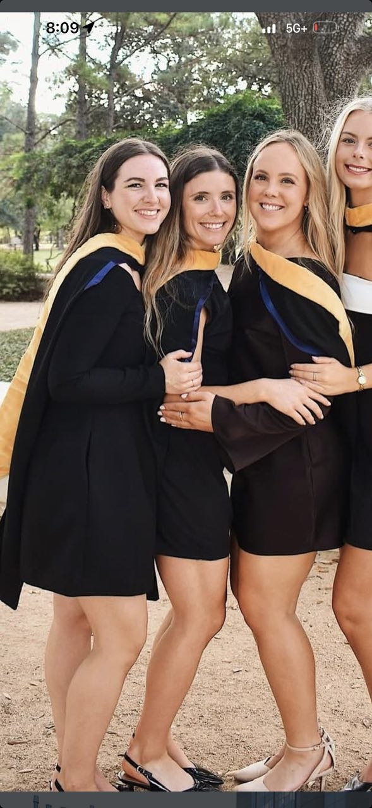
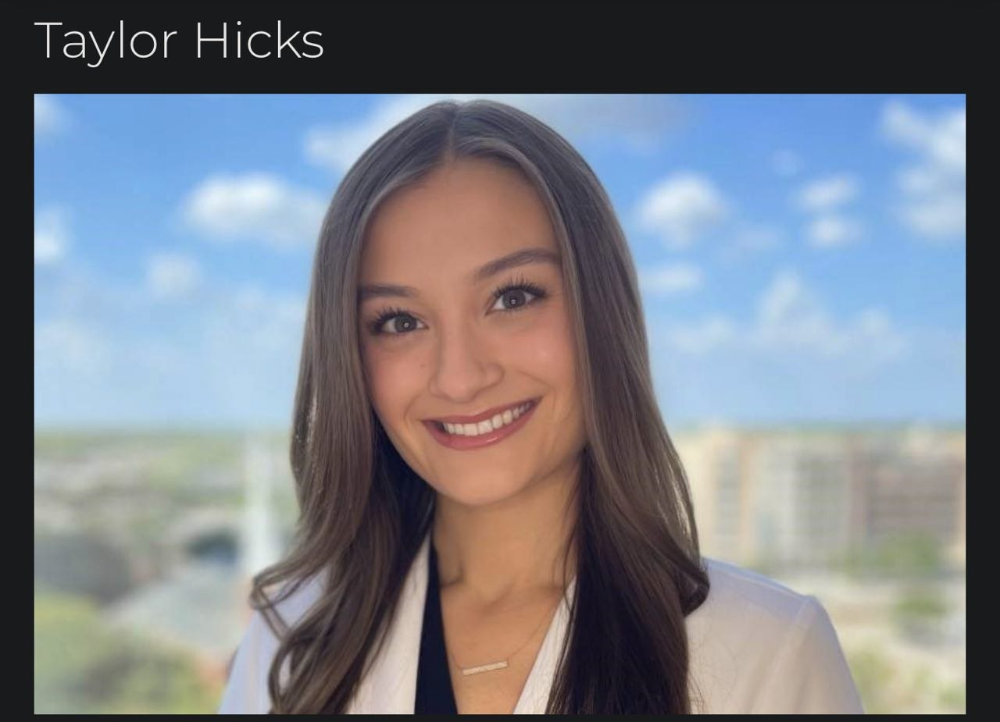

4 Prospects Ranked · Head-to-Head Comparison · Strengths & Weaknesses · April 1, 2026

Same profession as Taylor but better school (BCM vs Mary Hardin-Baylor)
She initiated — saw his photo and expressed immediate physical attraction
Warm connection through Colton's wife — pre-vetted, trusted
Zero professional/ethical barriers (unlike Taylor's TMB 190.8)
Healthcare = can likely handle emotional weight (Michael, Jessica's ALS)
Same age = same life stage. Both just finished building credentials.
Unknown: emotional depth not yet tested. First date will reveal.
Unknown: hasn't seen his full story yet (no degree, blue collar roots)

Chemistry CONFIRMED — "I definitely would have loved to get to know you better"
Old Houston money background (Memorial HS, Junior League) = substance
Texted back TWICE unprompted after rejection — slow burn is working
Interest level 8/10 despite having a boyfriend
The way she handled the exchange = class, warmth, emotional intelligence
Currently seeing someone — timing is wrong
TMB Rule 190.8 = license risk for her to date a patient
2 years older — minor but she's more settled/established
Lives in same building — proximity creates organic opportunities
9-woman panel voted 8-1 YES on leaving the note
Note was line-by-line voted by writers' room — optimized
Full name "Kasey Hodge" on note → she Googles → LinkedIn #1
Cold approach — 25-30% probability she texts
Everything is unknown — could be taken, could be uninterested
If she says no, they still share a building
Attractive, available, low drama — perfect FWB
Apartment is clean/intentional — more depth than feed suggests
Shuts down when Michael comes up — can't hold emotional weight
No career trajectory. "I Miss My Ex" crop top energy.
"Good enough" trap — easy enough to delay the search for great
Kasey is punching down. She's the floor, not the ceiling.
| Dimension | Abby | Taylor | Garage Girl | Cami |
|---|---|---|---|---|
| Looks | 8 | 8.5 | ? | 7.5-8 |
| Career/Ambition | 9.5 (BCM PA) | 9 (PA, Derm) | ? | 3 |
| Education | BCM Masters | MHB Masters | ? | Unknown/None |
| Who Initiated | SHE DID | Kasey | Kasey (note) | Mutual |
| Connection Type | Warm (friends) | Clinical (patient) | Cold (stranger) | FWB |
| Barriers | None | Boyfriend + TMB | Unknown | None |
| Emotional Depth | TBD (likely high) | 8/10 | ? | 3/10 |
| Can Hold Michael? | Likely (healthcare) | Likely (class/depth) | ? | NO — shuts down |
| Can Handle Jessica ALS? | Likely (PA training) | Likely | ? | Unlikely |
| Age Match | Same (27) | +2 yrs (29) | ? | -2 yrs (25) |
| Available? | YES | NO (seeing someone) | Unknown | YES (FWB) |
| Wife Potential | 8-9 (projected) | 8.5 | ? | 2 |
| FWB Material | N/A — not the play | N/A | N/A | 8/10 |
| Status | 🟢 Texting tmrw | ⏸️ Slow burn | 📝 Note pending | 🟡 FWB active |
"His girl in one sentence: A 26-30 year old Texas-raised woman with her own career, a dog, a gym habit, a close family, and at least one scar that taught her the difference between impressive and real."
"The old Kasey earned Cami. The new Kasey deserves better. Not because Cami's worthless — but because alignment beats attraction every single time."
🔴 TODAY: Text Abby. "Hey Abby, this is Kasey — Colton's buddy. Heard we need to meet. When are you free this week?"
🟡 THIS WEEK: Buy blank cream notecards at Target (stationery aisle). Write the note. Leave on parking garage girl's car.
🟡 THIS WEEK: BUILD INSTAGRAM. @kaseyhodge. 9-post grid ready. This is OVERDUE and every girl will check it.
⏸️ ONGOING: Taylor — DO NOTHING. Don't reply to her last text. Show up to next appointment. Silence is the play.
⏸️ ONGOING: Cami — Fine where she is. Don't let comfort replace ambition.